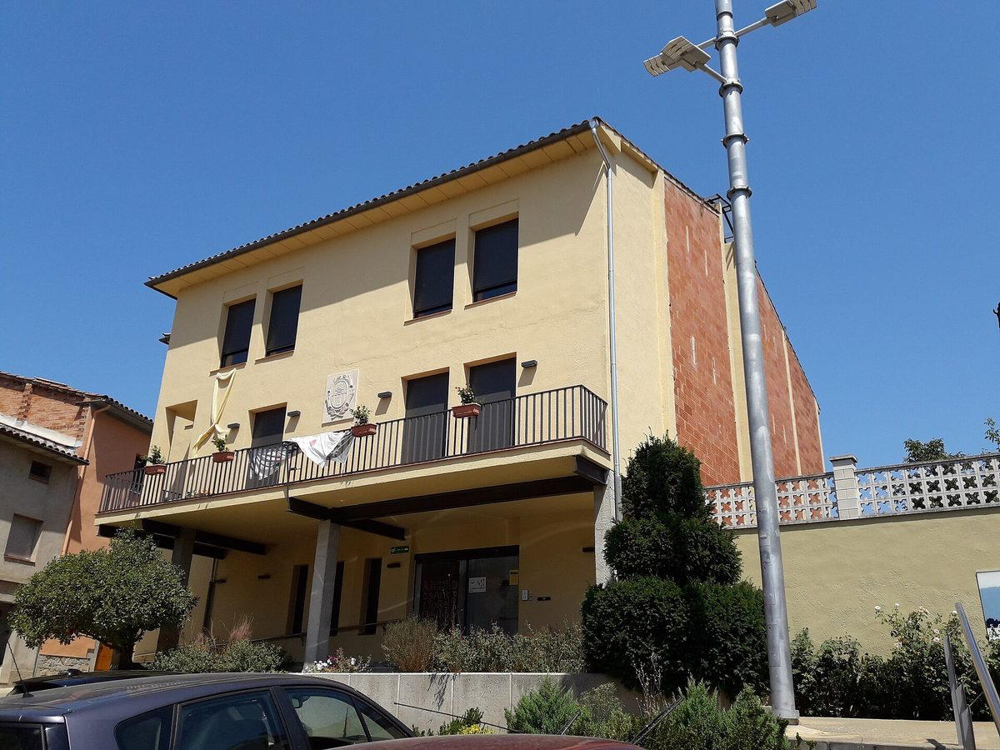

스페인 카탈루냐 오소나 에너지공동체 20여 곳, 마을 4곳 도는 '에너지 투어'로 경험 나눠…카탈루냐 118곳 중 28곳이 오소나에

군 지역에너지청·협동조합 OECOOP 주최로 비크·산페레데토레요·토레요·발레냐 공동체 방문…오소나·류사네스엔 협동조합형 29곳, 주민 96%가 자기 마을 공동체에 참여 가능
스페인 카탈루냐 오소나 군의 에너지공동체 20여 곳이 지난 24일(토) 군내 마을 4곳을 하루 동안 차례로 찾아가는 '오소나 에너지 투어(Tour Energètic d'Osona)'를 열고 설립·운영 경험을 나눴다. 행사는 오소나 군의회 산하 지역에너지청(ALEO)과 협동조합 OECOOP가 주최하고 에코세르베이스(Ecoserveis)가 기술 지원을 맡았으며, 참가자들은 비크의 비코프(Vicoop), 산페레데토레요의 COSPES, 토레요의 페스카 에네르지아(Pesca Energia), 발레냐의 발레냐 소스테니블레(Balenyà Sostenible)를 돌며 각 공동체의 의사결정 구조와 걸어온 길, 사업을 세우고 꾸리며 부딪힌 어려움을 들었다. 행사에서 발표된 자료에 따르면 카탈루냐의 에너지공동체 118곳 가운데 28곳이 오소나에 있고, 오소나와 이웃 류사네스에는 협동조합으로 세워진 공동체가 29곳이며, 주민 96%가 자기 마을에서 에너지공동체에 참여할 수 있다. 알베르트 마르세 푸졸 ALEO 담당 군의원은 이제 과제가 새 공동체를 만드는 데서 그치지 않고 있는 공동체를 단단히 다지는 일이라며 공동체끼리 연결을 넓혀야 한다고 말했다. 안나 캄프 이 카사노바스 카탈루냐 에너지연구소(ICAEN) 소장은 지정학적 불안 속에서 재생에너지와 공동체를 굳건히 해야 하고 배터리·저장으로 자가소비와 전력망 회복력을 높여야 한다고 강조했으며, ALEO 에너지전환사무소 히네스타 마리 로드리게스 기술직원은 세대 교체를 북돋고 공동체가 고민을 나눌 자리를 늘려야 한다고 밝혔다.
시민에너지 관점
한 군에 에너지공동체가 28곳 몰려 있고 주민 96%가 자기 마을에서 공동체에 들어갈 수 있다는 것은, 시민에너지가 몇몇 선도 사례를 넘어 지역의 기본 기반시설처럼 자리 잡을 수 있음을 보여 준다. 같은 카탈루냐의 지로나에서 2010년 소수의 시민이 세운 재생에너지 협동조합 솜 에네르지아(Som Energia)가 스페인 시민에너지 확산의 한 출발점이 됐듯, 작은 조직이 서로 경험을 주고받으며 자라 온 토양이 이런 밀도를 만들었다. 작은 공동체가 많아지면 운영이 흩어지고 전문성이 부족해진다는 우려가 있지만, 오소나는 군 지역에너지청과 협동조합이 함께 공동체를 잇고 기술 지원을 붙여 그 약점을 메우고 있다. 국내에서도 마을 단위 시민발전 조직이 하나씩 고립돼 버티지 않도록, 시·군이 지역에너지센터를 두고 조직끼리 배우고 함께 일하는 연결망부터 만들어야 한다.
출처: Més Osona 2026-10-26 Cristina Arumí 원문 보기
スペイン・カタルーニャのオソナでエネルギーコミュニティ約20団体、4つの町を巡る「エネルギーツアー」で経験を共有…カタルーニャ118団体のうち28団体がオソナに
郡の地域エネルギー庁と協同組合OECOOPが主催、ビク・サン・ペラ・ダ・トゥレリョ・トゥレリョ・バラニャのコミュニティを訪問…オソナとリュサネスには協同組合型が29団体、住民の96%が自分の町のコミュニティに参加可能
スペイン・カタルーニャ州オソナ郡のエネルギーコミュニティ約20団体が24日（土）、郡内の4つの町を1日かけて順に訪ねる「オソナ・エネルギーツアー（Tour Energètic d'Osona）」を開き、設立と運営の経験を共有した。主催はオソナ郡議会傘下の地域エネルギー庁（ALEO）と協同組合OECOOPで、エコセルベイス（Ecoserveis）が技術支援を担い、参加者はビクのビコープ（Vicoop）、サン・ペラ・ダ・トゥレリョのCOSPES、トゥレリョのペスカ・エネルジア（Pesca Energia）、バラニャのバラニャ・ソステニブレ（Balenyà Sostenible）を回って、各コミュニティの意思決定の仕組みやこれまでの歩み、事業の立ち上げと運営で直面した困難について話を聞いた。当日発表された資料によると、カタルーニャのエネルギーコミュニティ118団体のうち28団体がオソナにあり、オソナと隣のリュサネスには協同組合として設立されたコミュニティが29団体あって、住民の96%が自分の町でエネルギーコミュニティに参加できる。ALEO担当のアルベルト・マルセ・プジョル郡議員は、いまの課題は新しいコミュニティをつくるだけでなく既存のコミュニティを固めることだとして、コミュニティ同士のつながりを広げるべきだと述べた。カタルーニャ・エネルギー研究所（ICAEN）のアンナ・カンプ・イ・カザノバス所長は、地政学的な不安の中で再生可能エネルギーとコミュニティを強くし、蓄電池などで自家消費と電力網の回復力を高める必要があると強調し、ALEOエネルギー転換事務所のヒネスタ・マリ・ロドリゲス技術職員は、世代交代を後押しし、コミュニティが悩みを分かち合える場を増やすべきだと語った。
市民エネルギーの視点
一つの郡にエネルギーコミュニティが28団体集まり、住民の96%が自分の町でコミュニティに加われるということは、市民エネルギーが一部の先進事例を超え、地域の基本的なインフラのように根づきうることを示している。同じカタルーニャのジローナで2010年に少数の市民が立ち上げた再生可能エネルギー協同組合ソム・エネルジア（Som Energia）がスペインの市民エネルギー拡大の一つの出発点となったように、小さな組織が互いに経験をやりとりしながら育ってきた土壌がこの密度を生んだ。小さなコミュニティが増えると運営が分散し専門性が不足するとの懸念もあるが、オソナでは郡の地域エネルギー庁と協同組合が共にコミュニティをつなぎ、技術支援を付けることでその弱点を補っている。韓国でも村単位の市民発電組織がそれぞれ孤立して踏ん張ることのないよう、市・郡が地域エネルギーセンターを置き、組織同士が学び合い協力するネットワークから築くべきだ。
出典: Més Osona 2026-10-26 クリスティナ・アルミ（Cristina Arumí） 原文を読む
西班牙加泰罗尼亚奥索纳约20个能源社区走访4个市镇举办"能源之旅"交流经验…加泰罗尼亚118个社区中有28个在奥索纳
由县地方能源局和合作社OECOOP主办，参访比克、圣佩雷德托雷略、托雷略、巴莱尼亚的社区…奥索纳和柳萨内斯有29个合作社型社区，96%的居民可在本市镇参与社区
西班牙加泰罗尼亚奥索纳县的约20个能源社区于24日（周六）举办"奥索纳能源之旅（Tour Energètic d'Osona）"，用一天时间依次走访县内4个市镇，交流成立和运营经验。活动由奥索纳县议会下属的地方能源局（ALEO）和合作社OECOOP主办，Ecoserveis提供技术支持；参加者先后来到比克的Vicoop、圣佩雷德托雷略的COSPES、托雷略的Pesca Energia和巴莱尼亚的Balenyà Sostenible，了解各社区的决策结构、发展历程以及在创立和运营中遇到的困难。根据活动上公布的资料，加泰罗尼亚现有能源社区118个，其中28个在奥索纳；奥索纳和相邻的柳萨内斯有29个以合作社形式成立的能源社区，96%的居民可以在本市镇参与能源社区。负责ALEO事务的县议员阿尔贝特·马尔塞·普霍尔表示，现在的任务已不只是建立新社区，而是巩固现有社区，社区之间应加强联系。加泰罗尼亚能源研究所（ICAEN）所长安娜·坎普·伊·卡萨诺瓦斯强调，在地缘政治不安之下要巩固可再生能源和能源社区，并通过电池和储能提高自用率和电网韧性；ALEO能源转型办公室技术人员希内斯塔·玛丽·罗德里格斯则表示，应推动代际交接，并为社区提供更多分享困惑的空间。
市民能源视角
一个县聚集了28个能源社区，96%的居民可以在本市镇加入社区，这说明市民能源可以超越少数先行案例，像基础设施一样在地方扎根。正如2010年在同属加泰罗尼亚的赫罗纳由少数市民创立的可再生能源合作社Som Energia成为西班牙市民能源扩散的出发点之一，小型组织相互交流经验、共同成长的土壤造就了这样的密度。有人担心小型社区一多，运营就会分散、专业能力不足，但奥索纳由县地方能源局和合作社一起把社区连接起来并配套技术支持，弥补了这一弱点。韩国也应避免村级市民发电组织各自孤立苦撑，由市、郡设立地方能源中心，先搭建让组织之间相互学习、共同合作的网络。
来源: Més Osona 2026-10-26 克里斯蒂娜·阿鲁米（Cristina Arumí） 查看原文
About 20 energy communities in Osona, Catalonia, share experience on an "energy tour" of four towns; 28 of Catalonia's 118 communities are in Osona
Organised by the county's local energy agency and the cooperative OECOOP, the tour visited communities in Vic, Sant Pere de Torelló, Torelló and Balenyà; Osona and Lluçanès have 29 cooperative-based communities and 96% of residents can join one in their own town
About 20 energy communities from the county of Osona in Catalonia, Spain, took part on Saturday, October 24, in the Tour Energètic d'Osona, a one-day trip through four of the county's towns to share what they have learned setting up and running their projects. The tour was organised by the Local Energy Agency of Osona (ALEO), part of the Osona County Council, and the cooperative OECOOP, with technical support from Ecoserveis, and took participants to Vicoop in Vic, COSPES in Sant Pere de Torelló, Pesca Energia in Torelló and Balenyà Sostenible in Balenyà to hear about each community's governance, its path so far and the difficulties of launching and managing projects. According to figures presented during the day, 28 of Catalonia's 118 energy communities are in Osona; Osona and neighbouring Lluçanès have 29 energy communities set up as cooperatives, and 96% of residents can take part in an energy community in their own municipality. Albert Marcé Pujol, the county councillor in charge of ALEO, said the challenge now is not only to create new communities but to consolidate existing ones, calling for stronger links between them. Anna Camp i Casanovas, director of the Catalan Energy Institute (ICAEN), stressed the importance of renewables and of stronger energy communities amid geopolitical uncertainty, and the role of batteries and storage in raising self-consumption and grid resilience, while Ginesta Mary Rodríguez, a technician at ALEO's Energy Transition Office, said generational renewal must be encouraged and communities need more spaces to share their concerns.
Citizen Energy View
Twenty-eight energy communities in a single county, with 96% of residents able to join one in their own town, show that citizen energy can move beyond a few pioneering cases and take root as part of a region's basic infrastructure. Just as Som Energia, the renewable energy cooperative founded by a handful of citizens in Girona, also in Catalonia, in 2010, became one of the starting points for citizen energy in Spain, this density grew from soil where small organisations learn from one another. Some worry that many small communities mean scattered management and thin expertise, but in Osona the county energy agency and a cooperative are linking communities together and adding technical support to make up for that weakness. In Korea, too, cities and counties should set up local energy centres and build networks where village-level citizen power groups can learn and work together, rather than leaving each to struggle on alone.
Source: Més Osona 2026-10-26 Cristina Arumí Read the original